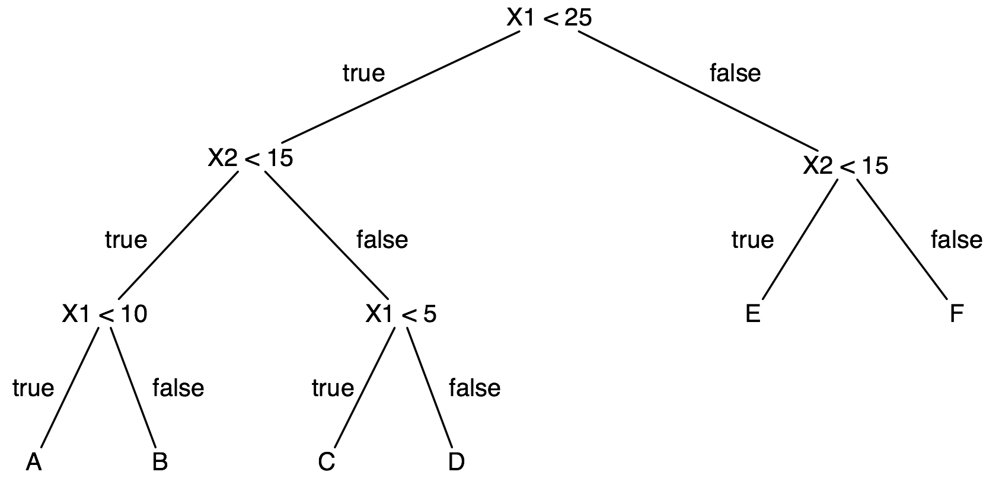
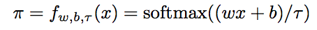
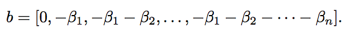
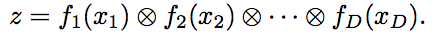
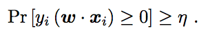
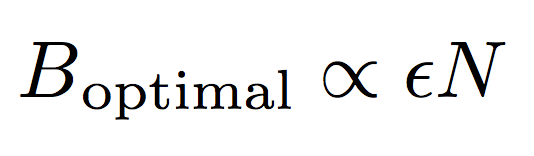

A Lesson in Modern Classification Models
Dec 20th, 2018In machine learning, classification problems are one of the most fundamentally exciting and yet challenging existing problems. The implications of a competent classification model are enormous - these models are leveraged, for example, for natural language processing text classification, image recognition, big data prediction, and reinforcement learning model training.
However, the current implementation of classification algorithms are terrible. It’s generally accepted in industry (for example) to bindly apply gradient descent boosting trees to any classification problem. But this should not be the case - significant research is being put into modern classification algorithms that create improvements that allow significantly more accurate models with asymptotically less processing data required.
Here, we explore some of those improvements to popular classification algorithms. This article assumes some level of familiarity with machine learning, however, the majority of the post should still be accessible either way.
Deep Neural Decision Trees
Deep neural networks have been proven powerful at processing perceptual data, such as images and audio. However, for tabular data, tree-based models are more popular. A large factor as to this conclusion is that tree-based models offer natural interpretability. For example, consider a business that is attempting to determine why a system is failing. You would make a model with several parameters - network speed, uptime, threads processing, type of system, etc. It follows that, along with predictioning if a system will fail, it is also very helpful to know why a system is failing. Below is an example decision tree that a model might produce - much easier to understand than a black-box neural net, right?
Deep neural decision trees are easy to implement with about 20 lines of code in TensorFlow or PyTorch. Because it is implemented with a neural network, DNDT supports out of the box GPU acceleration and min-batch learning of datasets that do not fit in memory, thanks to modern deep learning frameworks. They have also shown to be more accurate than traditional DTs on most datasets.
The implementation here is simple - we make the split decision (i.e. deciding which path of the tree to take) via a binning function. A binning function takes an input x (a scalar) and produces an index of the bins that x belongs. We bin each feature via its own one-layer neural network with the following activation function:
The math here is intuitive - w is a constant that follows the number of intervals we want to bin into as w = [1, 2 ... n-1]. b is constructed as:
r is a temperature factor. The cut points here b1, b2 ... bn are trainable variables. That means that as long as we sort them such that they are monotonically increasing.
We now use a Kronecker product to construct our decision tree as follows:
Each feature is binned by their own neural network fd(xd), where d is the index of the feature. Z represents the index of the leaf node where x arrives - we can assume a linear classifier at each leaf z classifies instances arriving there, and we're done!
Confidence Weighted Linear Classification
Many machine learning tasks, especially in natural language processing, end up with many different features in which most are binary and infrequently operated on. This results in data sparseness, which demands large training sets, and very high dimensional parameter vectors.
Consider a product review classifier where the goal is to label the review as positive or negative. Many reviews might state “I liked this author”, and would thus correlate the word “liked” to a positive review. Imagine a slightly modified negative review: “I liked this author, but found this book dull”. The classifier likely would not see the world “dull” very often, and this would likely incorrectly classify this review as positive as the review uses the phrase “liked this author”, thus decreasing the rate of convergence.
We can solve this with confidence-weighted learning, a learning method that maintains a probabilistic measure of confidence in each parameter. Less confident parameters are updated more aggressively than more confident ones.
The concept here is simple: We make sure that, for each iteration, the probability of a correct prediction for each training instance is no smaller than the confidence for that prediction n in [0, 1] such that:
Bayesian Principles to Determine Batch Sizing
Beyond picking a representative model, there are a set number of variables that affect the degree of accuracy our model represents. One major example is batch sizing - the amount of training data used per iteration during training. Research in early 2018 has shown that there is not only an optimal batch size that maximises test accuracy, but that we can apply Babesian principles calculate as a scaling function of learning rate and training data size. Consider the following linear scaling function:
The concept here is very simple. B represents batch size, epsilon represents learning rate, and N represents training data size. Therefore, we can reach several helpful conclusions: as the size of our training data increases, the size of each batch iteration should increase by the same amount. Consequently, we should increase our batch size as our learning data increases. This allows us to determine an optimal batch size for a single experiment, and scale it to determine batch sizes for any number of varied experiments, optimizing test accuracy across the board.
This is just a taste of the breath (and depth) of classification problems in modern machine learning research - everything in this article was published in the last few months. Hopefully, this shows you a little bit of the exciting complexity that one might consider when choosing their classification models in the future.